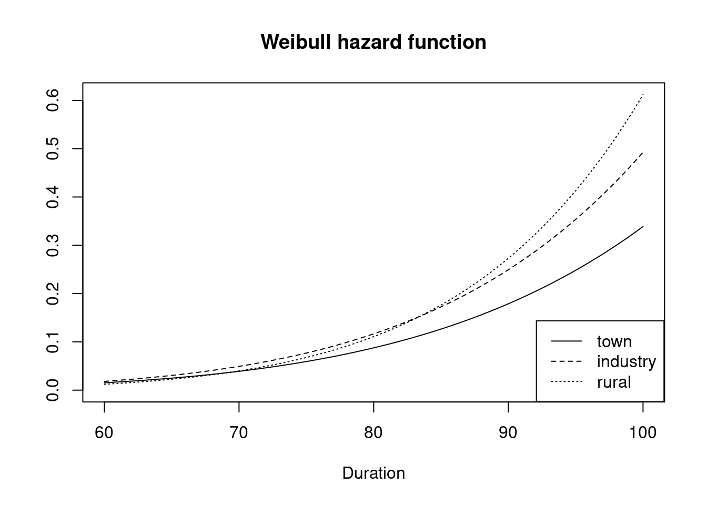

Chapter 7 Accounting for Heterogeneity
7.1 Setup working datasets
library(tidyverse)
library(knitr)
library(kableExtra)
library(eha)
library(survival)
library(data.table)
library(flextable)
library(survminer)
library(ggfortify)
library(ggplot2)
library(data.table)
library(coxme)
library(broom)oldmort01 <- oldmort
oldmort01$male <- relevel(oldmort01$sex, ref = "female")7.2 An introductory Example2
Let us assume that in a follow-up study, the cohort is not homogeneous but instead consists of two equally sized groups with differing hazard rates. Assume further that we have no indication of which group an individual belongs to, and that members of both groups follow an exponential life length distribution: \[\begin{equation*} \begin{split} h_1(t) &= \lambda_1 \\ h_2(t) &= \lambda_2 \\ \end{split} \qquad t > 0. \end{equation*}\] This implies that the corresponding survival functions \(S_1\) and \(S_2\) are \[\begin{equation*} \begin{split} S_1(t) &= e^{-\lambda_1 t} \\ S_2(t) &= e^{-\lambda_2 t} \\ \end{split} \qquad t > 0, \end{equation*}\] and a randomly chosen individual will follow the “population mortality” \(S\), which is a mixture of the two distributions: \[\begin{equation*} S(t) = \frac{1}{2} S_1(t) + \frac{1}{2} S_2(t), \quad t > 0. \end{equation*}\] Let us calculate the hazard function for this mixture. We start by finding the density function \(f\): \[\begin{equation*} f(t) = -\frac{dS(x)}{dx} = \frac{1}{2}\left(\lambda_1 e^{-\lambda_1 t} + \lambda_2 e^{-\lambda_2 t} \right), \quad t > 0. \end{equation*}\] Then, by the definition of \(h\) we get \[\begin{equation} h(t) = \frac{f(t)}{S(t)} = \omega(t) \lambda_1 + \big(1 - \omega(t)\big) \lambda_2, \quad t > 0, \tag{7.1} \end{equation}\] with \[\begin{equation*} \omega(t) = \frac{e^{-\lambda_1 t}}{e^{-\lambda_1 t} + e^{-\lambda_2 t}} \end{equation*}\] It is easy to see that \[\begin{equation*} \omega(t) \rightarrow \left\{ \begin{array}{ll} 0, & \lambda_1 > \lambda_2 \\ \frac{1}{2}, & \lambda_1 = \lambda_2 \\ 1, & \lambda_1 < \lambda_2 \end{array} \right. , \quad \mbox{as } t \rightarrow \infty, \end{equation*}\] implying that \[\begin{equation*} h(t) \rightarrow \min(\lambda_1, \lambda_2), \quad t \rightarrow \infty, \end{equation*}\] see Figure 7.1.
Figure 7.1: Population hazard function (solid line). The dashed lines are the hazard functions of each group, constant at 1 and 2.
The important point here is that it is impossible to tell from data alone whether the population is homogeneous, with all individuals following the same hazard function given by equation (7.1), or if it in fact consists of two groups, each following a constant hazard rate. Therefore, individual frailty models like \(h_i(t) = Z_i h(t), \quad i = 1, \ldots, n\), where \(Z_i\) is the “frailty” for individual No. \(i\), and \(Z_1, \ldots, Z_n\) are independent and identically distributed (iid) are less useful.
A heuristic explanation to all this is the dynamics of the problem: We follow a population (cohort) over time, and the composition of it changes over time. The weaker individuals die first, and the proportion stronger will steadily grow as time goes by.
Another terminology is to distinguish between individual and population hazards. In Figure 7.1 the solid line is the population hazard, and the dashed lines represent the two kinds of individual hazards present. Of course, in a truly homogeneous population, these two concepts coincide.
7.3 Working with heterogeneity3
Suppose that we collect data measuring time (variable \(time\)) from the onset of risk at time zero until occurrence of an event of interest (variable \(fail\)) on patients from different hospitals (variable \(hospital\)). We want to study patients’ survival as a function of some risk factors, say age and gender (variable \(age\) and \(gender\)).
- We can estimate the effect of predictors on survival by fitting a Cox model.
\[h(t) = h_0(t) \exp(age\times x_1 + gender\times x_2)\]
- In this model, we ignore the fact that patients come from different hospitals and therefore assumed that hospitals have no effect on the results.
- If we believe that there might be a group effect (e.g., the effect of a hospital), we should take it into account in the analysis.
- In this model, we ignore the fact that patients come from different hospitals and therefore assumed that hospitals have no effect on the results.
There are various ways of adjusting for group effects (i.e., subjects are correlated we mean that subjects’ failure times are correlated or they are heterogenous). Each depends on the nature of the grouping of subjects and on the assumptions we are willing to make about the effect of grouping on subjects’ survival.
- Stratified model
- Suppose we identified a fixed number of hospitals and then sampled our patients within each hospital; that is, we stratified on hospitals in our sampling design. Then we can adjust for the homogeneity of patients within a stratum (a hospital) using a stratified Cox model. \[h_g(t) = h_{0g}(t)\exp(age\times x_1 + gender\times x_2), \;\; where \;\;g=1, \cdots, n\]
- The same logic applies to
- the situation when we believe that there is possible dependence among patients within a hospital. Subjects might be correlated, either because of how we sampled our data or because of some other reasons specific to the nature of the grouping, or
- we want to allow baseline hazards to be different for each hospital rather than constraining them to be multiplicative version of each other. If your main focus is on the effect of other predictors (e.g., age and gender), you may benefit from accounting for the group-specific effects in a more general way by stratifying on the group.
- Random effect model
- Alternately, we can model correlation by assuming that it is induced by an unobserved hospital-level random effect, or frailty, and by specifying the distribution of this random effect (only for parametric model). The effect of a hospital is assumed to be random and to have a multiplicative effect on the hazard function. Here the effect of a hospital is directly incorporated into the hazard function, resulting in a different model specification for the survival data: a shared frailty model. As such, both point estimates and their standard errors will change. For example, in the gamma distribution, the effect of a hospital is governed by a mean of 1 and variace of \(\theta\). If the estimated \(\hat{\theta}\) is not significantly different from zero, we ignore the correlation due to hospitals is ignored. \[h(t) = h_0(t) \exp(age\times x_1 + gender\times x_2) \;\;with\;\; frailty(hospital)\]
- Fixed effect model
- Suppose we are only interested in the effect of our observed hospitals rather than in making inferences about the effect of all hospitals based on the observed random sample of hospitals. In this case, the effects of all hospitals are treated as fixed, and we estimate it by including in the model. We assume that the hospitals have a direct multiplicative effect on the hazard function. That is, all patients share the sam baseline hazard function, and the effect of a hospital multiplies this baseline hazard function up or down depending on the sign of the estimated coefficients for the hospital indicator. \[h(t) = h_0(t) \exp(age\times x_1 + gender\times x_2 + hospital \times x_3)\]
- Interaction with stratification
- You may include an interaction term “hospital*age”, which will result in a different model: the effect of a hospital is absorbed in the baseline hazard but the effect of \(age\) is allowed to vary with hospitals. \[h_g(t) = h_{0g}(t) \exp(age\times x_1 + gender\times x_2 + hospital \times age \times x_3), \;\; where\;\; g=1, \cdots, n\]
In sum, there is no definitive recommendation on how to account for the group effect and on which model is the most appropriate when analyzing data.
- Robust standard error (aka empirical standard error, sandwich estimator)
A widely used technique for adjusting for the correlation among outcomes on the same subject is called robust estimation (also referred to as empirical estimation). This technique essentially involves adjusting the estimated variances of regression coefficients obtained for a fitted model to account for misspecification of the correlation structure assumed
- Crude modeloldmort_coxst <- coxph(Surv(enter, exit, event) ~ male + region + imr.birth,
data = oldmort01)
summary(oldmort_coxst)## Call:
## coxph(formula = Surv(enter, exit, event) ~ male + region + imr.birth,
## data = oldmort01)
##
## n= 6495, number of events= 1971
##
## coef exp(coef) se(coef) z Pr(>|z|)
## malemale 0.185247 1.203516 0.045913 4.035 5.47e-05 ***
## regionindustry 0.224903 1.252201 0.087093 2.582 0.00981 **
## regionrural 0.069031 1.071470 0.086627 0.797 0.42552
## imr.birth 0.004548 1.004558 0.006742 0.675 0.49994
## ---
## Signif. codes: 0 '***' 0.001 '**' 0.01 '*' 0.05 '.' 0.1 ' ' 1
##
## exp(coef) exp(-coef) lower .95 upper .95
## malemale 1.204 0.8309 1.0999 1.317
## regionindustry 1.252 0.7986 1.0557 1.485
## regionrural 1.071 0.9333 0.9042 1.270
## imr.birth 1.005 0.9955 0.9914 1.018
##
## Concordance= 0.545 (se = 0.008 )
## Likelihood ratio test= 31.41 on 4 df, p=3e-06
## Wald test = 31.7 on 4 df, p=2e-06
## Score (logrank) test = 31.8 on 4 df, p=2e-06- Robust standard erroroldmort_coxst <- coxph(Surv(enter, exit, event) ~ male + region + imr.birth,
id = id,
robust = TRUE,
data = oldmort01)
summary(oldmort_coxst)## Call:
## coxph(formula = Surv(enter, exit, event) ~ male + region + imr.birth,
## data = oldmort01, robust = TRUE, id = id)
##
## n= 6495, number of events= 1971
##
## coef exp(coef) se(coef) robust se z Pr(>|z|)
## malemale 0.185247 1.203516 0.045913 0.046314 4.000 6.34e-05 ***
## regionindustry 0.224903 1.252201 0.087093 0.086125 2.611 0.00902 **
## regionrural 0.069031 1.071470 0.086627 0.084892 0.813 0.41613
## imr.birth 0.004548 1.004558 0.006742 0.006904 0.659 0.51006
## ---
## Signif. codes: 0 '***' 0.001 '**' 0.01 '*' 0.05 '.' 0.1 ' ' 1
##
## exp(coef) exp(-coef) lower .95 upper .95
## malemale 1.204 0.8309 1.0991 1.318
## regionindustry 1.252 0.7986 1.0577 1.482
## regionrural 1.071 0.9333 0.9072 1.265
## imr.birth 1.005 0.9955 0.9911 1.018
##
## Concordance= 0.545 (se = 0.008 )
## Likelihood ratio test= 31.41 on 4 df, p=3e-06
## Wald test = 31.68 on 4 df, p=2e-06
## Score (logrank) test = 31.8 on 4 df, p=2e-06, Robust = 31.52 p=2e-06
##
## (Note: the likelihood ratio and score tests assume independence of
## observations within a cluster, the Wald and robust score tests do not).7.4 Stratification
Stratification means that data is split up in groups called strata, and a separate partial likelihood function is created for each stratum, but with common values on the regression parameters corresponding to the common explanatory variables. In the estimation, these partial likelihoods are multiplied together, and the product is treated as a likelihood function. Thus, there is one restriction on the parameters, they are the same across strata. There are typically two reasons for stratification. First, if the proportionality assumption does not hold for a factor covariate, a way out is to stratify along it. Second, a factor may have too many levels, so that it is inappropriate to treat is as an ordinary factor. This argument is similar to the one about using a frailty model. Stratification is also a useful tool with matched data. When a factor does not produce proportional hazards between categories, stratify on the categories.4
7.4.1 Generalized stratified models
\[h_g(t,X)=h_0g (t) \exp[\beta_1X_1+\beta_2X_2+ \cdots+\beta_p x_p]\]
- \(g=1,2,\dots,k^*,\) strata defined from \(Z^*\), which has \(k^*\) categories
- \(Z^*\) is not included in the model
- \(X_i\)s are included in the model
- Hazard ratio is same for each stratum
A simple way to eliminate the effect of clustering is to stratify on the clusters.
- The drawback with a stratified analysis is that it is not possible to estimate the effect of covariates that are constant within clusters.
- Notice also that the hazard functions for groups (e.g., males and females) differ only insofar as they have different baseline hazard functions, namely, \(h_{01}(t)\) for females and \(h_{02}(t)\) for males. However, the coefficients \(\beta_i\)s are the same for both female and male models.
7.4.2 group_by analysis (dplyr)
group_by <- oldmort01 %>%
group_by(region) %>%
do(oldmort_coxst = coxph(Surv(enter, exit, event) ~ male + imr.birth, data = .))
group_by$oldmort_coxst## [[1]]
## Call:
## coxph(formula = Surv(enter, exit, event) ~ male + imr.birth,
## data = .)
##
## coef exp(coef) se(coef) z p
## malemale 0.681102 1.976054 0.159655 4.266 1.99e-05
## imr.birth -0.004887 0.995125 0.017667 -0.277 0.782
##
## Likelihood ratio test=17.33 on 2 df, p=0.0001729
## n= 657, number of events= 173
##
## [[2]]
## Call:
## coxph(formula = Surv(enter, exit, event) ~ male + imr.birth,
## data = .)
##
## coef exp(coef) se(coef) z p
## malemale 0.19435 1.21452 0.07365 2.639 0.00832
## imr.birth 0.03092 1.03140 0.01120 2.761 0.00575
##
## Likelihood ratio test=14.66 on 2 df, p=0.0006558
## n= 2214, number of events= 759
##
## [[3]]
## Call:
## coxph(formula = Surv(enter, exit, event) ~ male + imr.birth,
## data = .)
##
## coef exp(coef) se(coef) z p
## malemale 0.096529 1.101342 0.062874 1.535 0.125
## imr.birth -0.010157 0.989894 0.009451 -1.075 0.282
##
## Likelihood ratio test=3.32 on 2 df, p=0.1906
## n= 3624, number of events= 10397.4.3 strata in coxph
oldmort_coxst <- coxph(Surv(enter, exit, event) ~ male + imr.birth + strata(region),
data = oldmort01)
summary(oldmort_coxst)## Call:
## coxph(formula = Surv(enter, exit, event) ~ male + imr.birth +
## strata(region), data = oldmort01)
##
## n= 6495, number of events= 1971
##
## coef exp(coef) se(coef) z Pr(>|z|)
## malemale 0.178905 1.195907 0.045963 3.892 9.93e-05 ***
## imr.birth 0.003723 1.003730 0.006769 0.550 0.582
## ---
## Signif. codes: 0 '***' 0.001 '**' 0.01 '*' 0.05 '.' 0.1 ' ' 1
##
## exp(coef) exp(-coef) lower .95 upper .95
## malemale 1.196 0.8362 1.0929 1.309
## imr.birth 1.004 0.9963 0.9905 1.017
##
## Concordance= 0.528 (se = 0.008 )
## Likelihood ratio test= 15.55 on 2 df, p=4e-04
## Wald test = 15.68 on 2 df, p=4e-04
## Score (logrank) test = 15.72 on 2 df, p=4e-047.4.4 strata in coxph with interaction terms
Interaction terms for region can be included directly in the model formula by including product terms using the : operator.
oldmort_coxst <- coxph(Surv(enter, exit, event) ~ male + imr.birth + male:region + strata(region),
data = oldmort01)
summary(oldmort_coxst)## Call:
## coxph(formula = Surv(enter, exit, event) ~ male + imr.birth +
## male:region + strata(region), data = oldmort01)
##
## n= 6495, number of events= 1971
##
## coef exp(coef) se(coef) z Pr(>|z|)
## malemale 0.684144 1.982075 0.159427 4.291 1.78e-05 ***
## imr.birth 0.004434 1.004444 0.006755 0.656 0.511585
## malefemale:regionindustry 0.483570 1.621854 0.175642 2.753 0.005902 **
## malemale:regionindustry NA NA 0.000000 NA NA
## malefemale:regionrural 0.593993 1.811206 0.171391 3.466 0.000529 ***
## malemale:regionrural NA NA 0.000000 NA NA
## ---
## Signif. codes: 0 '***' 0.001 '**' 0.01 '*' 0.05 '.' 0.1 ' ' 1
##
## exp(coef) exp(-coef) lower .95 upper .95
## malemale 1.982 0.5045 1.4502 2.709
## imr.birth 1.004 0.9956 0.9912 1.018
## malefemale:regionindustry 1.622 0.6166 1.1495 2.288
## malemale:regionindustry NA NA NA NA
## malefemale:regionrural 1.811 0.5521 1.2944 2.534
## malemale:regionrural NA NA NA NA
##
## Concordance= 0.528 (se = 0.008 )
## Likelihood ratio test= 27.26 on 4 df, p=2e-05
## Wald test = 28.43 on 4 df, p=1e-05
## Score (logrank) test = 29.12 on 4 df, p=7e-06Suppose we wish to estimate the hazard ratio for male = 1 vs. male = 0 for region = 2. This hazard ratio can be estimated by exponentiating the coefficient for male plus 2 times the coefficient for the male*region interaction term. This expression is obtained by substituting the appropriate values into the hazard in both the numerator (for male = 1) and denominator (for male = 0).
\[HR=\frac{h_0(t) \exp[\beta_1 (1) + \beta_2 imr.birth + \beta_3 (1)(2) + \beta_4 (2)]}{h_0(t) \exp[\beta_1 (0) + \beta_2 imr.birth + \beta_3 (0)(2) + \beta_4 (2)]}=\exp(\beta_1 + 2 \beta_3)\]
The resulting hazard ratio, \(\exp(\beta_1 + 2 \beta_2)\), is an exponentiated linear combination of parameters. Unfortunately, R does not have a lincom command that Stata provides or an estimate statement that SAS provides in order to calculate a linear combination of parameter estimates. However an approach that can be used in any statistical software package for such a situation is to recode the variable(s) of interest such that the desired estimate is no longer a linear combination of parameter estimates.
7.4.5 Weibull PH models with or without stratification
- Without stratification
Weib.PH_st <- phreg(Surv(enter, exit, event) ~ male + imr.birth,
data = oldmort01,
dist="weibull",
param="survreg")
b_Weib.PH_st = coef(Weib.PH_st)
Weib.PH_st## Call:
## phreg(formula = Surv(enter, exit, event) ~ male + imr.birth,
## data = oldmort01, dist = "weibull", param = "survreg")
##
## Covariate W.mean Coef Exp(Coef) se(Coef) Wald p
## male
## female 0.594 0 1 (reference)
## male 0.406 0.192 1.212 0.046 0.000
## imr.birth 15.162 0.005 1.005 0.006 0.446
##
## log(scale) 4.371 0.012 0.000
## log(shape) 2.091 0.027 0.000
##
## Events 1971
## Total time at risk 37824
## Max. log. likelihood -7287.9
## LR test statistic 18.30
## Degrees of freedom 2
## Overall p-value 0.000106031- With stratification
Weib.PH_st <- phreg(Surv(enter, exit, event) ~ male + imr.birth + strata(region),
data = oldmort01,
dist="weibull",
param="survreg")
b_Weib.PH_st = coef(Weib.PH_st)
Weib.PH_st## Call:
## phreg(formula = Surv(enter, exit, event) ~ male + imr.birth +
## strata(region), data = oldmort01, dist = "weibull", param = "survreg")
##
## Covariate W.mean Coef Exp(Coef) se(Coef) Wald p
## male
## female 0.594 0 1 (reference)
## male 0.406 0.181 1.198 0.046 0.000
## imr.birth 15.162 0.005 1.005 0.007 0.445
##
## log(scale):1 4.383 0.020 0.000
## log(shape):1 1.954 0.106 0.000
## log(scale):2 4.352 0.015 0.000
## log(shape):2 2.009 0.046 0.000
## log(scale):3 4.379 0.012 0.000
## log(shape):3 2.158 0.035 0.000
##
## Events 1971
## Total time at risk 37824
## Max. log. likelihood -7276.8
## LR test statistic 16.30
## Degrees of freedom 2
## Overall p-value 0.000288105Here are some differences between two models:
Compared to the Weibull PH model without stratification, the stratified model includes additional set of parameters of log(scale) and log(shape). More specifically, both log(scale) and log(shape) will be estimated for each stratum.
Only one set of coefficients of clinic and dose was estimated. this means that the stratified model assume the effects of variables are the same across strata. In other words, “we allow both the scale and shape of the hazard to vary with strata, yet we constrained the effects of included variables to be the same for each stratum.”
plot(Weib.PH_st)
7.5 Frailty models5
Frailty models in survival analysis correspond to hierarchical models in linear or generalized linear models. They are also called mixed effects models. They contain an extra random component designed to account for individual(or subgroup)-level differences in the hazard otherwise unaccounted for by the model. The frailty, \(\alpha\), is a multiplicative effect on the hazard assumed to follow some distribution. The hazard function conditional on the frailty can be expressed as \(h(t|\alpha)=\alpha [h(t)]\).
7.5.1 Simple Frailty Model
Vaupel et al. (1979) described an individual frailty model, \[h(t;x,Z)=h_0(t)Z e^{\beta x}, \;\; t>0,\] where \(Z\) is assumed to be drawn independently for each individual. Hazard rates for “random survivors” are not proportional, but converging (to each other) if the frailty distribution has finite variance. Thus, the problem may be less pronounced in AFT than in PH regression.
7.5.4 Mixed effects Cox model specification
\[ h(t) = h_0(t) \exp{(X\beta+Zb)},\;\;\; b \sim G(0, \sum(\theta)) \] where \(h_0\) is unspecified baseline hazard function, \(X\) and \(Z\) are the design matrices for the fixed and random effects, respectively, \(\beta\) is the vector of fixed-effect coefficients and \(b\) is the vector of random effects coefficents. The random effects distribution \(G\) is modeled as Gaussian with mean 0 and a variance matrax \(\sum\), which in turn depends a vector of parameters \(\theta\).
7.5.5 Models without considering fraility
R offers three choices for the distribution of the frailty: the gamma, Gaussian, and \(t\) distributions. The variance (\(\theta\)) of the frailty component is a parameter typically estimated by the model. If \(\theta\) = 0, then there is no frailty.
First, we rerun a stratified Cox model without frailty.
oldmort_coxst <- coxph(Surv(enter, exit, event) ~ male + imr.birth + strata(region),
data = oldmort01)
summary(oldmort_coxst)## Call:
## coxph(formula = Surv(enter, exit, event) ~ male + imr.birth +
## strata(region), data = oldmort01)
##
## n= 6495, number of events= 1971
##
## coef exp(coef) se(coef) z Pr(>|z|)
## malemale 0.178905 1.195907 0.045963 3.892 9.93e-05 ***
## imr.birth 0.003723 1.003730 0.006769 0.550 0.582
## ---
## Signif. codes: 0 '***' 0.001 '**' 0.01 '*' 0.05 '.' 0.1 ' ' 1
##
## exp(coef) exp(-coef) lower .95 upper .95
## malemale 1.196 0.8362 1.0929 1.309
## imr.birth 1.004 0.9963 0.9905 1.017
##
## Concordance= 0.528 (se = 0.008 )
## Likelihood ratio test= 15.55 on 2 df, p=4e-04
## Wald test = 15.68 on 2 df, p=4e-04
## Score (logrank) test = 15.72 on 2 df, p=4e-04Next we illustrate how to include a frailty component in this model.
oldmort_coxst <- coxph(Surv(enter, exit, event) ~ male + imr.birth + strata(region) + frailty(id, distribution = "gamma"),
data = oldmort01) ## Warning in coxpenal.fit(X, Y, istrat, offset, init = init, control, weights =
## weights, : Inner loop failed to coverge for iterations 2summary(oldmort_coxst)## Call:
## coxph(formula = Surv(enter, exit, event) ~ male + imr.birth +
## strata(region) + frailty(id, distribution = "gamma"), data = oldmort01)
##
## n= 6495, number of events= 1971
##
## coef se(coef) se2 Chisq DF p
## malemale 0.178913 0.045964 0.045963 15.15 1.0 9.9e-05
## imr.birth 0.003723 0.006769 0.006769 0.30 1.0 5.8e-01
## frailty(id, distribution 0.10 0.1 4.9e-01
##
## exp(coef) exp(-coef) lower .95 upper .95
## malemale 1.196 0.8362 1.0929 1.309
## imr.birth 1.004 0.9963 0.9905 1.017
##
## Iterations: 5 outer, 42 Newton-Raphson
## Variance of random effect= 5e-05 I-likelihood = -11764.4
## Degrees of freedom for terms= 1.0 1.0 0.1
## Concordance= 0.553 (se = 0.008 )
## Likelihood ratio test= 15.74 on 2.1 df, p=4e-04The term + frailty(id, distribution=“gamma”) is included in the model formula. The first argument of the frailty function is the variable id and indicates that the unmeasured heterogeneity (the frailty) is at the individual level. The second argument indicates that the distribution of the random component is the gamma distribution.
Under the table of parameter estimates the output indicates that the variance of random effect is very small. The p-value for the frailty component indicates that the frailty component is not significant. We conclude that the variance of the random component is zero for this model (i.e., there is no frailty).
7.5.6 coxme package for frailty models
7.5.6.1 Nested in each individual
The package coxme works with frailty (e.g., (1 | id)), accounting for multiple observations in each id.
oldmort_coxst <- coxme(Surv(enter, exit, event) ~ male + region + imr.birth + (1 | id),
data = oldmort01)
summary(oldmort_coxst)## Cox mixed-effects model fit by maximum likelihood
## Data: oldmort01
## events, n = 1971, 6495
## Iterations= 5 23
## NULL Integrated Fitted
## Log-likelihood -13578.6 -13562.88 -13539.4
##
## Chisq df p AIC BIC
## Integrated loglik 31.44 5.00 7.6668e-06 21.44 -6.49
## Penalized loglik 78.40 27.36 8.0644e-07 23.68 -129.15
##
## Model: Surv(enter, exit, event) ~ male + region + imr.birth + (1 | id)
## Fixed coefficients
## coef exp(coef) se(coef) z p
## malemale 0.187097661 1.205745 0.046200912 4.05 5.1e-05
## regionindustry 0.225769128 1.253286 0.087555314 2.58 9.9e-03
## regionrural 0.068923216 1.071354 0.087071018 0.79 4.3e-01
## imr.birth 0.004661296 1.004672 0.006782026 0.69 4.9e-01
##
## Random effects
## Group Variable Std Dev Variance
## id Intercept 0.10983436 0.01206359The components of the resutls are6
The total number of observations and the total number of events (deaths) in the data set.
The computational effort, summarized as the number of iterations for the optim routine and the underlying Newton-Raphson iterations used.
The log partial likelihood for a model with no covariates or random effects, the fitted partial likelihood, and the value with the random effects integrated out. We will normally be interested in the null and integrated values. (The log values are printed, but labeled as PL and IPL for brevity).
Likelihood ratio tests based on the integrated and penalized views of the model, along with penalized values. The AIC penalizes by twice the effective degrees of freedom, and the BIC by log(d) times the effective degrees of freedom, where d is the number of events.
A summary of the fixed effects
A summary of the variances of the random effects
- One feature of the mixed effects Cox model is that the standard deviation of the random effect is directly interpretable. The random effects \(b_j\) for each individual \(j\) are in the risk score, a value of .11 for instance (one standard deviation above the mean) corresponds to a relative risk of exp(.11) = 1.12, an almost 12% higher risk of death for subjects at that individual.
7.5.6.2 Nested in each mother
m.id is a identifier for each mother.
oldmort_coxst <- coxme(Surv(enter, exit, event) ~ male + region + imr.birth + (1 | m.id),
data = oldmort01)
summary(oldmort_coxst)## Cox mixed-effects model fit by maximum likelihood
## Data: oldmort01
## events, n = 888, 3340 (3155 observations deleted due to missingness)
## Iterations= 2 10
## NULL Integrated Fitted
## Log-likelihood -5702.662 -5694.263 -5693.911
##
## Chisq df p AIC BIC
## Integrated loglik 16.8 5.00 0.0048989 6.8 -17.15
## Penalized loglik 17.5 4.35 0.0021189 8.8 -12.04
##
## Model: Surv(enter, exit, event) ~ male + region + imr.birth + (1 | m.id)
## Fixed coefficients
## coef exp(coef) se(coef) z p
## malemale 0.13528873 1.1448673 0.06840477 1.98 0.048
## regionindustry 0.16109275 1.1747939 0.13624607 1.18 0.240
## regionrural -0.08711187 0.9165746 0.14598296 -0.60 0.550
## imr.birth -0.02119861 0.9790245 0.01447452 -1.46 0.140
##
## Random effects
## Group Variable Std Dev Variance
## m.id Intercept 0.0199927885 0.0003997116Because of missing cases in m.id, the results above are not comparable. To make both models, nested in each individual vs. nested in each mother, we select cases with m.id is not missing.
oldmort01_mid <- oldmort01[!is.na(oldmort01$m.id), ]Then fit the models, respectively.
oldmort_coxst <- coxme(Surv(enter, exit, event) ~ male + region + imr.birth + (1 | id),
data = oldmort01_mid)
summary(oldmort_coxst)## Cox mixed-effects model fit by maximum likelihood
## Data: oldmort01_mid
## events, n = 888, 3340
## Iterations= 5 24
## NULL Integrated Fitted
## Log-likelihood -5702.662 -5694.064 -5618.221
##
## Chisq df p AIC BIC
## Integrated loglik 17.20 5.00 4.1412e-03 7.20 -16.75
## Penalized loglik 168.88 78.25 1.3031e-08 12.38 -362.37
##
## Model: Surv(enter, exit, event) ~ male + region + imr.birth + (1 | id)
## Fixed coefficients
## coef exp(coef) se(coef) z p
## malemale 0.14578584 1.1569484 0.07085215 2.06 0.04
## regionindustry 0.16556153 1.1800556 0.14095526 1.17 0.24
## regionrural -0.08807818 0.9156893 0.15076497 -0.58 0.56
## imr.birth -0.02125968 0.9789647 0.01493296 -1.42 0.15
##
## Random effects
## Group Variable Std Dev Variance
## id Intercept 0.30065228 0.09039179oldmort_coxst <- coxme(Surv(enter, exit, event) ~ male + region + imr.birth + (1 | m.id),
data = oldmort01_mid)
summary(oldmort_coxst)## Cox mixed-effects model fit by maximum likelihood
## Data: oldmort01_mid
## events, n = 888, 3340
## Iterations= 2 10
## NULL Integrated Fitted
## Log-likelihood -5702.662 -5694.263 -5693.911
##
## Chisq df p AIC BIC
## Integrated loglik 16.8 5.00 0.0048989 6.8 -17.15
## Penalized loglik 17.5 4.35 0.0021189 8.8 -12.04
##
## Model: Surv(enter, exit, event) ~ male + region + imr.birth + (1 | m.id)
## Fixed coefficients
## coef exp(coef) se(coef) z p
## malemale 0.13528873 1.1448673 0.06840477 1.98 0.048
## regionindustry 0.16109275 1.1747939 0.13624607 1.18 0.240
## regionrural -0.08711187 0.9165746 0.14598296 -0.60 0.550
## imr.birth -0.02119861 0.9790245 0.01447452 -1.46 0.140
##
## Random effects
## Group Variable Std Dev Variance
## m.id Intercept 0.0199927885 0.0003997116http://ehar.se/r/ehar2/multivariate-survival-models.html#an-introductory-example↩︎
Cleves MA. An Introduction to Survival Analysis Using Stata. 3rd ed. Stata Press; 2010.↩︎
http://ehar.se/r/ehar2/more-on-cox-regression.html#strat_6↩︎
This section is a summarized excerpt from Goran Brostrom, Event History Analysis with R and Kleinbaum and Klein, Survival Analysis, and https://cran.r-project.org/web/packages/coxme/vignettes/coxme.pdf↩︎
https://cran.r-project.org/web/packages/coxme/vignettes/coxme.pdf↩︎